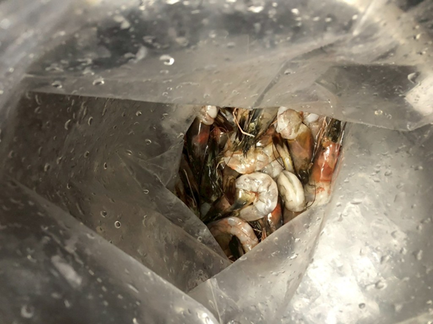

B.Appearance
| NO | Evidence | Not Complied With Standard | Issue Type |
|---|---|---|---|
| 1 |  | พบวัตถุดิบ/ ผลิตภัณฑ์ เสื่อมสภาพ/ บูด/ เน่าเสีย |
Critical |
| 2 | พบวัตถุดิบ/ ผลิตภัณฑ์ มีลักษณะปรากฎ/ สี/ กลิ่น/ รส/ เนื้อสัมผัสไม่ถูกต้องตามมาตรฐาน |
Normal | |
| 3 | พบวัตถุดิบ/ ผลิตภัณฑ์ มีสิ่งแปลกปลอมปนเปื้อน |
Critical | |
| 4 | พบวัตถุดิบ/ ผลิตภัณฑ์ มีลักษณะปรากฎ/ สี/ กลิ่น/ รส/ เนื้อสัมผัสไม่ถูกต้องตามมาตรฐาน |
Normal | |
| 5 | พบผลิตภัณฑ์ที่จัดเสิร์ฟให้กับลูกค้ามี น้ำหนัก/ จำนวนชิ้น/ องค์ประกอบ ไม่ถูกต้องตามมาตรฐาน |
Normal | |
| 6 | พบผลิตภัณฑ์ที่จัดเสิร์ฟให้กับลูกค้ามี น้ำหนัก/ จำนวนชิ้น/ องค์ประกอบ ไม่ถูกต้องตามมาตรฐาน |
Normal |